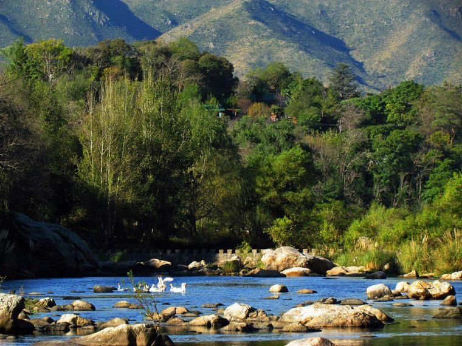

Visita
CUEVA DE LOS PAJARITOS

La Cueva de los Pajaritos es un paraje serrano ubicado en el Valle de Punilla en la argentina Provincia de Córdoba.
Es lugar de nidificación y descanso de singulares aves autóctonas,
que en el año 2008 fue distinguido como Séptima Maravilla Natural de Córdoba.
HOSPITAL ABANDONADO SANTA MARIA DE PUNILLA

El Hospital abandonado de Santa María, también conocido como neuropsiquiátrico Santa María de Punilla, esta situado en el Valle de Punilla, provincia de Córdoba, tiene una historia rica que se remonta a principios del siglo XX.
RIO COSQUIN
El río Cosquín nace, a unos 3 km de la ciudad de Cosquín, por la confluencia de los ríos San Francisco y Yuspe (en la región, se conoce a este punto como La Juntura de los ríos). En su corto recorrido hasta el lago San Roque, recibe el aporte de varios pequeños riachuelos y arroyos, que no modifican su curso ni caudal.